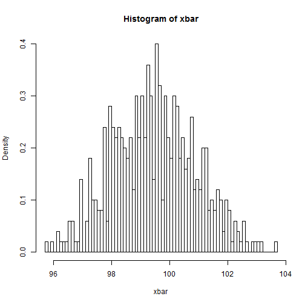

This is a shiny app that tests the theory of the central limit theorem. The app gives you the ability to play around with the relevant variables of a probability distribution and shows how this feeds into the CLT.
Karim Lameer
internet
This is a shiny app that tests the theory of the central limit theorem. The app gives you the ability to play around with the relevant variables of a probability distribution and shows how this feeds into the CLT.
The central limit theorem states that from a probability distribution (which doesn't have to be normally distributed), if you take samples of a specified number (n) and find the means of these samples, the distribution of these means will be normally distributed.
There are many theories where this can be proved but it is also something that can be observed practically.
The variables that are used are relevant to the original distribution and the samples that are drawn from it.
They are:
The resulting histogram will be a function of all the variables above. Changing any one of the variables will change the histogram. The curve, or lack thereof, the histogram is determined by the last 2 variables.
The same code used to create the published histogram is given below. Please run it and enjoy!
mu=100
sigma=10
n = 50
numTrials = 500
xbar=rep(0,500)
for(i in 1:numTrials){xbar[i] = mean(as.integer(rnorm(n, mean=mu, sd=sigma)))}
hist(xbar, prob=TRUE, breaks=100)
